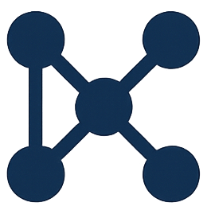

Recent Publications
Amy Roberts, Jack Marquez, Kin Hong NG, Kitty Mickelson, Aashish
Panta, Giorgio Scorzelli, Amy Gooch, Prisca Cushman, Matthew
Fritts, Himangshu Neog, Valerio Pascucci, and Michela Taufer.
The Making of a Community Dark Matter Dataset with the
National Science Data Fabric.
arXiv preprint arXiv:2507.13297, 2025.
[link]
Michela Taufer, Heberth Martinez*, Jakob Luettgau*, Lauren
Whitnah, Giorgio Scorzelli, Pania Newel, Aashish Panta, Timo
Bremer, Doug Fils, Christine R. Kirkpatrick, and Valerio
Pascucci.
Enhancing Scientific Research with FAIR Digital Objects in
the National Science Data Fabric.
IEEE Computing in Science and Engineering (CiSE), 25(5):39–47,
2023. 10.1109/MCSE.2024.3363828.
Meet the Team
Amy Roberts
Principal Investigator
University of Colorado Denver
Michela Taufer
Co-Principal Investigator
University of Tennessee Knoxville
Michael Sutherlin
Project Coordinator

Jack Marquez
Research Assistant Professor
Kin Hong NG
Research Scientist